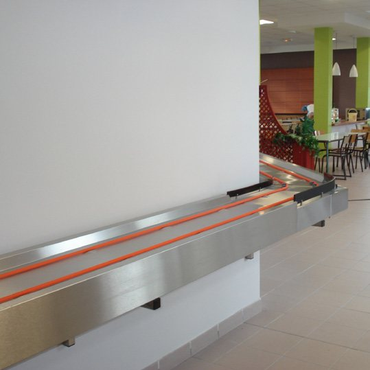
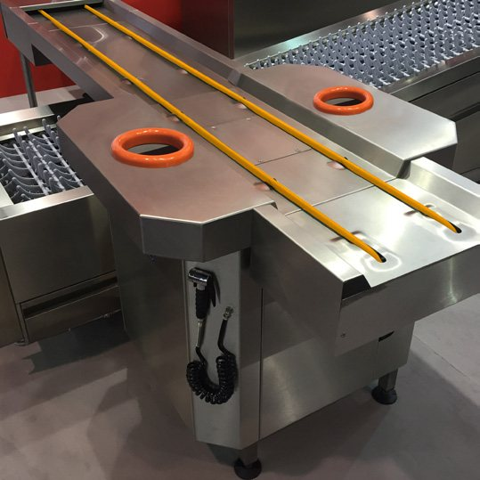
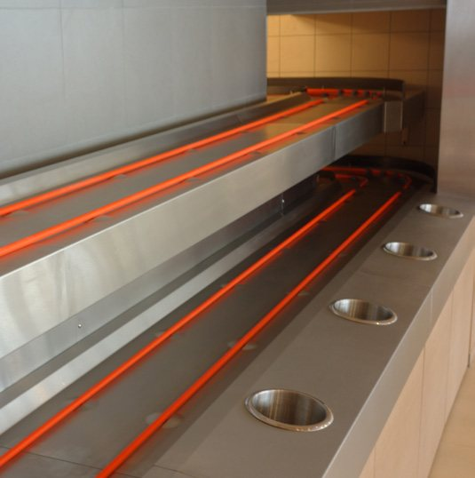
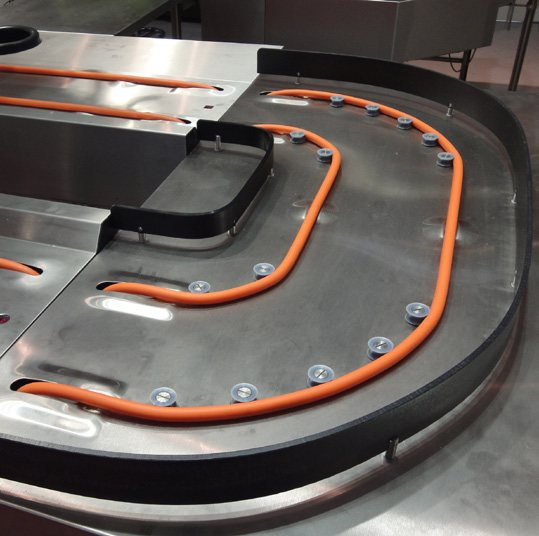
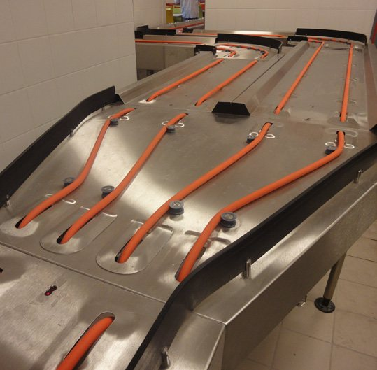
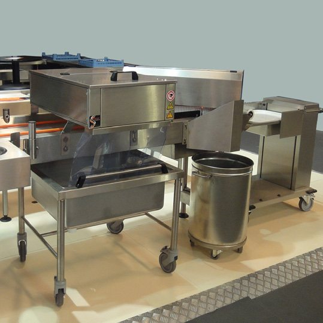
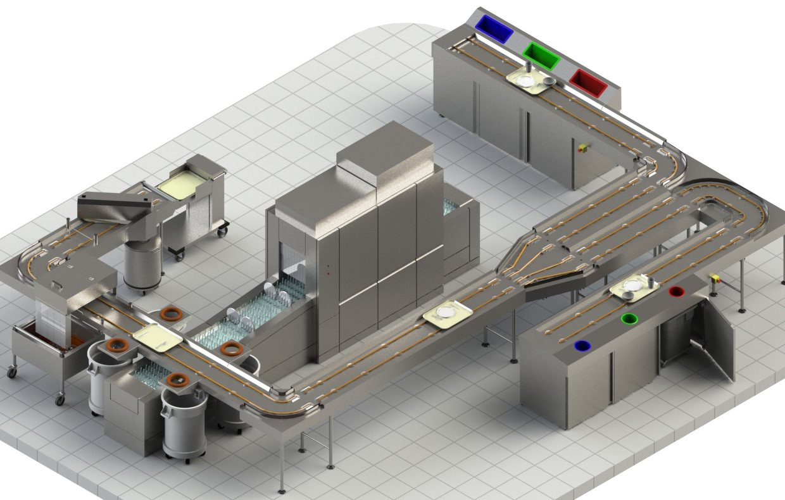
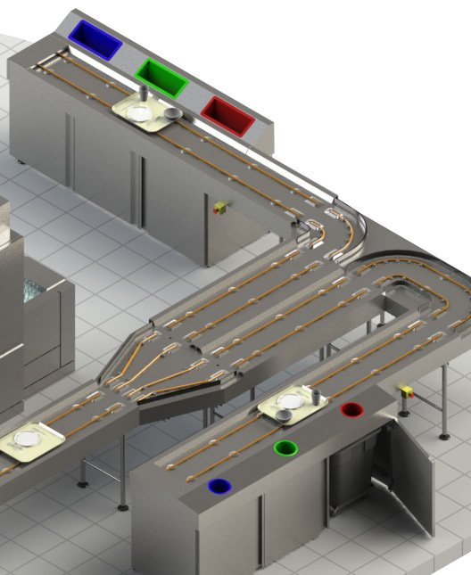
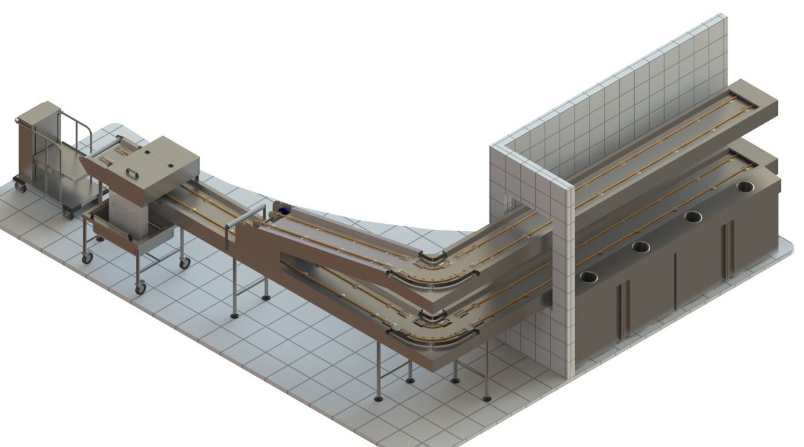

Technicord
Convoyeurs à cordes pour la dépose des plateaux.

Notre technique exclusive de convoyeurs de déposes à plateaux est sans conteste celle qui a le plus d’avantages et de garanties.
Nos poutres droites, disponibles en 6 longueurs et plusieurs largeurs, sont toujours en une pièce. Les empreintes bombées embouties dans la poutre (technique exclusive) guident la corde en polyuréthane de diamètre 15 mm.
Cette technique évite le frottement et le bruit d’un contact permanent, limite l’usure et permet un nettoyage facile, rapide et parfait du convoyeur.
La gamme Technicord comprend tous les éléments pour des solutions sur mesure : virages, aiguillages, mécanisation simple ou multiple, trappe coup de feu, extracteur magnétique, scrappeur, et une centaine d’équipements et accessoires.
Source : Fiche Technicord (PDF Sopacom)
Seules les informations figurant dans les documentations Sopacom sont reprises. Les points demandés mais non documentés sont signalés « à confirmer ».
| Poutres droites | 6 longueurs, plusieurs largeurs — toujours en une pièce |
|---|---|
| Guidage | Empreintes bombées embouties dans la poutre (technique exclusive) |
| Corde | Polyuréthane, Ø 15 mm |
| Configurations | Virages, aiguillages, mécanisation simple ou multiple |
| Fonctions techniques | Système d’accumulation, renvoi d’angle, commande à distance, temporisation pour avance cadencée |
| Équipements | Trappe coup de feu, extracteur magnétique, scrappeur — une centaine d’équipements et accessoires |
| Sur mesure | Solutions sur mesure à partir de l’ensemble des éléments de la gamme |
| À confirmer | Valeurs des 6 longueurs et des largeurs disponibles : non chiffrées dans la fiche. |
Source : Fiche Technicord (PDF Sopacom)
Une centaine d’équipements pour le sur-mesure.
- Chargeur d’angle motorisé
- Chariot niveau constant
- Rampe à rouleaux 430 mm
- Cellule détectrice d’objet
- Table de tri mobile 1100 × 600 et 600 × 600
- Extracteur magnétique
- Brosse de nettoyage plateaux motorisée
- Report à distance marche / arrêt
- Coup de poing d’arrêt d’urgence supplémentaire
- Bac mobile de réception des couverts
- Tablette de liaison pour tri frontal 500 × 510 ou sur mesure
- Piétement spécial Technicord incliné
- Convoyeur épaisseur spéciale 80 mm
- Pont de tri sur piétement 500 × 700 mm
- Bloc de tri amovible avec TVO en saillie pour triage frontal
- Bloc de tri amovible avec TVO en saillie pour triage latéral
- Fin de course électromécanique
- Goulotte humide longueur 800 mm de dévoiement « en S »
- Virage 90° pour goulotte humide
- Virage 45° pour goulotte humide
- Pont de tri rabattable ou amovible 550 × 800 mm ou 550 × 700 mm
- Tablette de tri pour goulotte humide
Source : Fiche Technicord (PDF Sopacom)
Technicord en situation.













S’intégrer à l’ensemble de la laverie.
Tri sélectif
La zone de tri sélectif peut être intégrée à la dépose plateaux ou installée en îlot séparé.
Source : Présentation « Environnement laverie mécanisé » (PDF Sopacom)
En savoir plus →Technilift
Le déchargement du Technilift se fait en continuité par dépose sur un transporteur à corde ou à palettes.
Source : Présentation « Environnement laverie mécanisé » (PDF Sopacom)
En savoir plus →Préparation
La version à cordes du convoyeur de préparation reprend le même principe exclusif que le Technicord.
Source : Fiche Technicord de préparation (PDF Sopacom)
En savoir plus →92 blocs AutoCAD Technicord.
Extraits de la bibliothèque CAO Sopacom : chaque bloc est consultable en plan et téléchargeable au format DWG.